最終效果
（根據維基音源使用規約，以下涉及政治音頻作品不得二次傳播）
無產階級文化大革命就是好 by宙暮（北京版）.ustx (87.8 KB)
設置語言
首先下載文件：
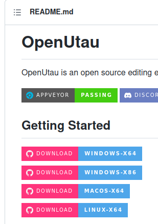
選擇Linux這個下載項。
https://github.com/stakira/OpenUtau/releases/download/OpenUtau-Latest/OpenUtau-linux-x64.tar.gz
然後解壓到新建文件夾OpenUtau中。
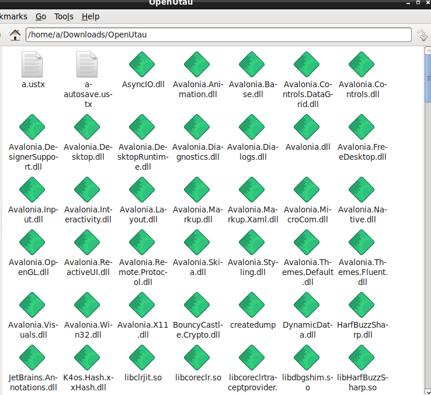
進入控制臺，cd到OpenUtau文件夾中，輸入命令 ./OpenUtau 即可運行。
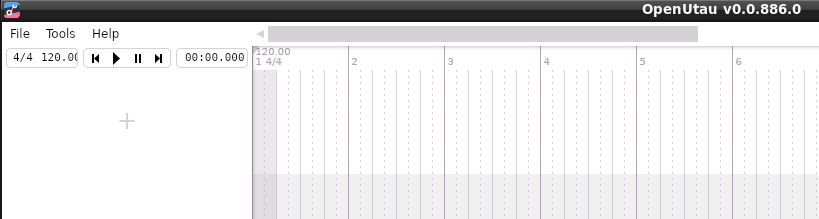
在菜單欄的Tools裡選擇Preferences…
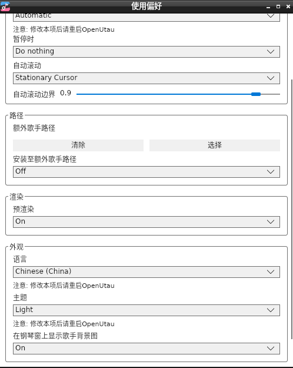
將語言設置為簡體中文（中國）。
安裝歌姬
前往Utau中華組WIKI的登錄中文音源頁面，選擇一個支持CVV、CVVC的音源（似乎OpenUtau不支持簡易整音），如2022年的——https://utauchn.huijiwiki.com/wiki/宙暮
以下是全部音源：
https://utauchn.huijiwiki.com/wiki/登录音源一览
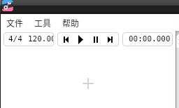
在工具選項裡選擇“安裝歌手”。
文件選擇下載好的CVV、CVVC音源壓縮包：
右上角的編碼選擇簡體中文：
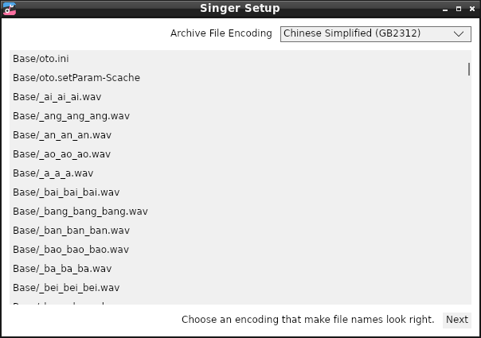
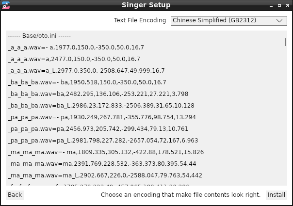
最後點擊Install。
走完進度條等於安裝完成。
點擊加號：
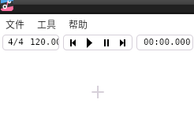
點擊選擇歌手，選擇Classic裡的音源：
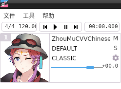
刪除歌手可以選擇工具裡的歌手，然後選擇你要刪除的歌手，點擊位置，彈出歌手文件夾所在地，把歌手的文件夾刪除重新打開程序即可。
填詞、譜曲

點擊最左端空白處。
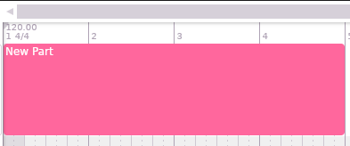
雙擊粉紅色塊狀物。
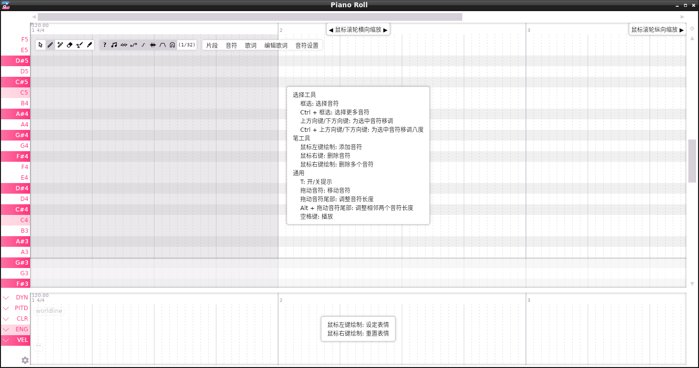
按T關閉提示。
接下來按照像私有軟件裡的UTAU那樣操作OpenUtau進行填詞、譜曲即可。
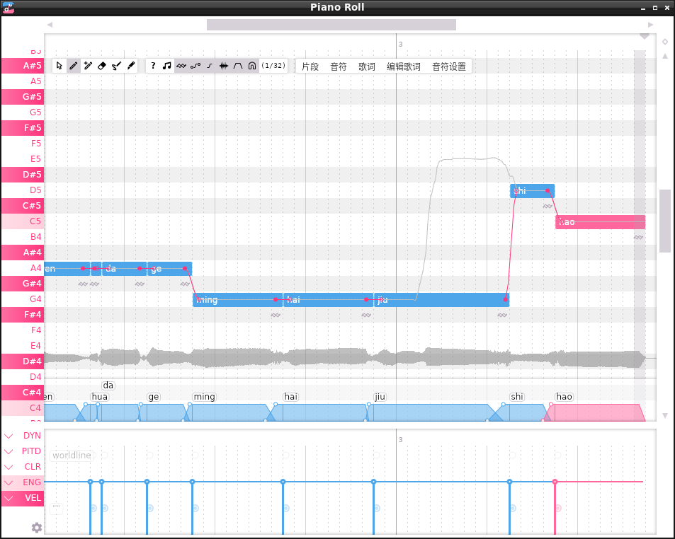
譜曲完《無產階級文化大革命就是好》的第一句。
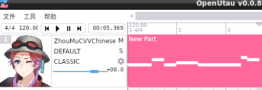
在文件裡選擇保存，然後導出Wav文件。
在控制臺目錄下的Export文件夾中有導出結果：
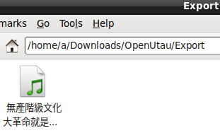
肝吧！
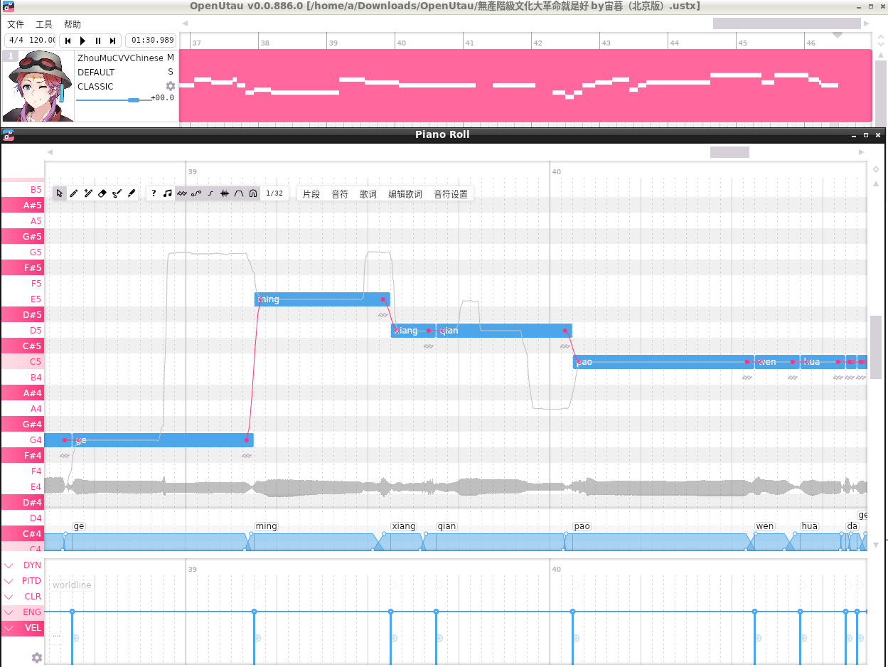
最終效果
（根據維基音源使用規約，以下涉及政治音頻作品不得二次傳播）
無產階級文化大革命就是好 by宙暮（北京版）.ustx (87.8 KB)